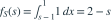

独立且均为
独立且均为  ，。对 ，
，。对 ， 的密度为多少？
的密度为多少？- A
- B
- C

- D
我已思考，展开答案与解析
正确答案：A
- 卷积时允许的 范围为 。

。
易错提醒和的密度在 1 的两侧表达式不同。
数学三·概率统计基础专题 · 数学三概率统计基础专题·原创第17题
按数学三常见概率统计知识点原创；不是历年真题或教材原题。
独立且均为 ，。对 ， 的密度为多少？
。数学三·概率统计基础专题 · 数学三概率统计基础专题·原创第17题
按数学三常见概率统计知识点原创；不是历年真题或教材原题。